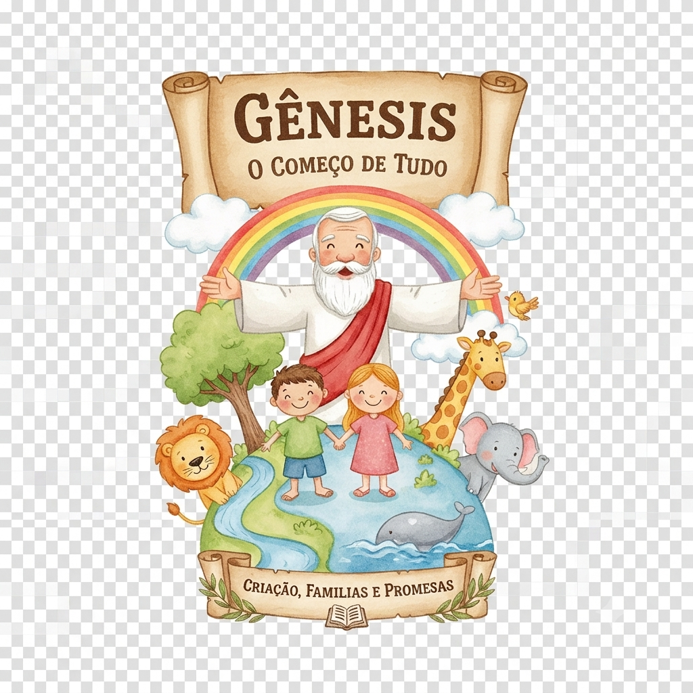
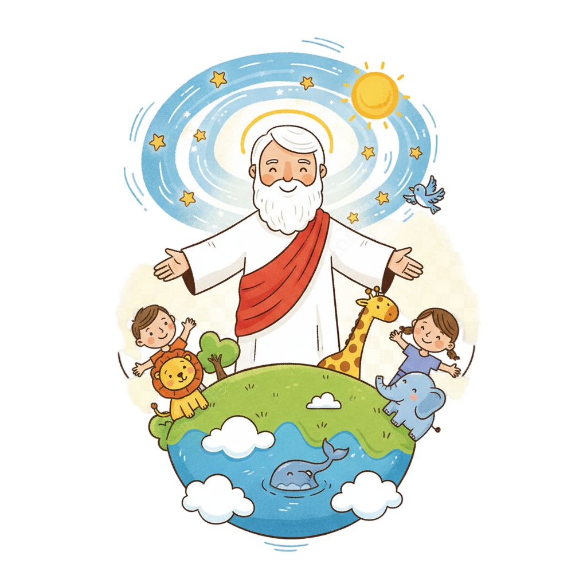
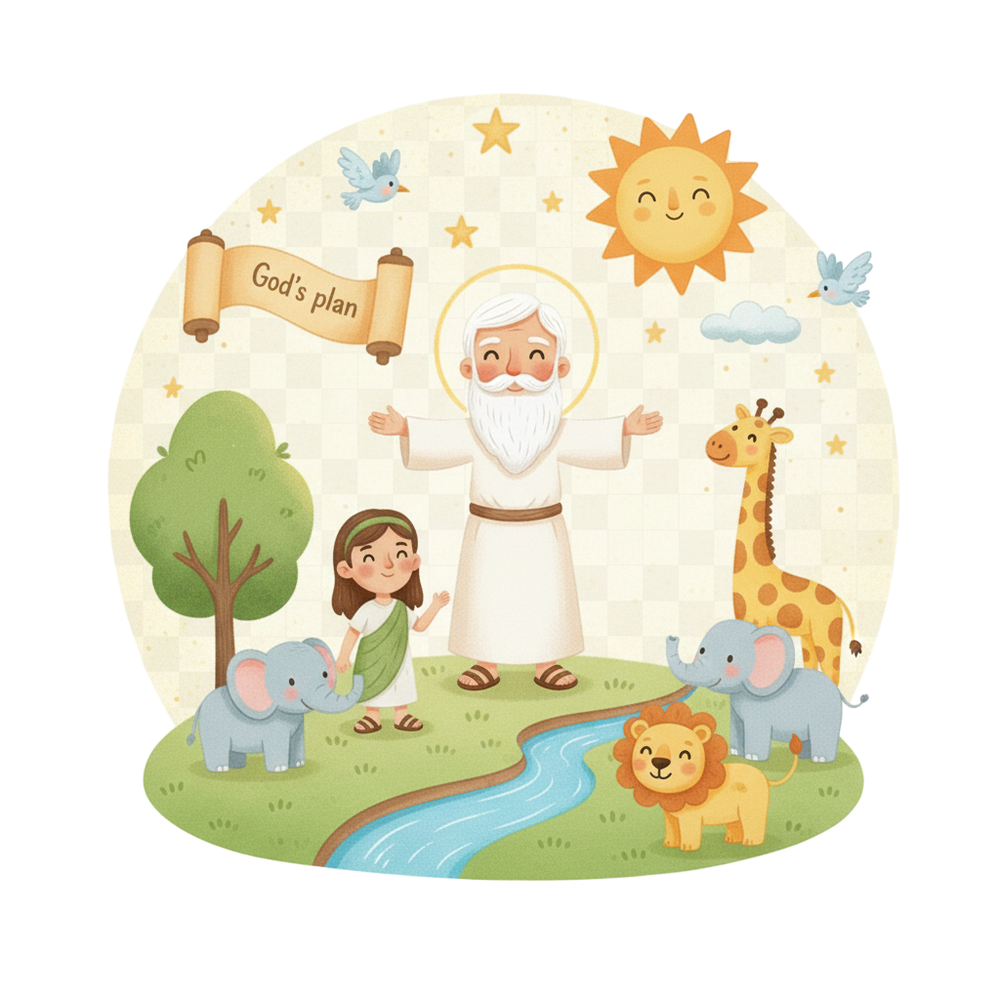
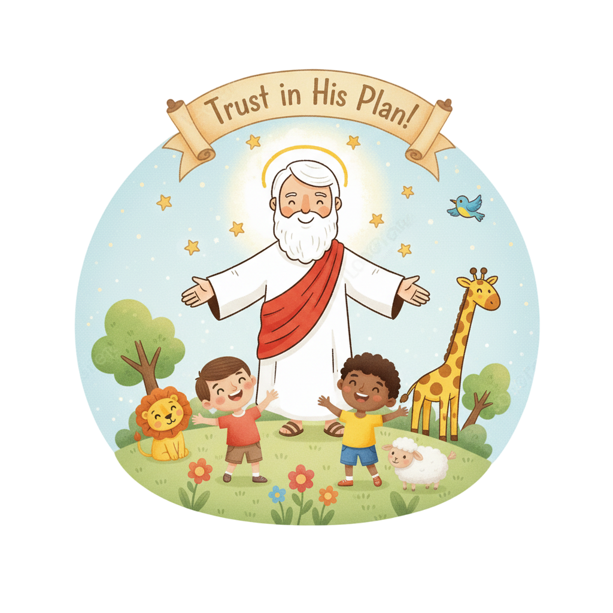
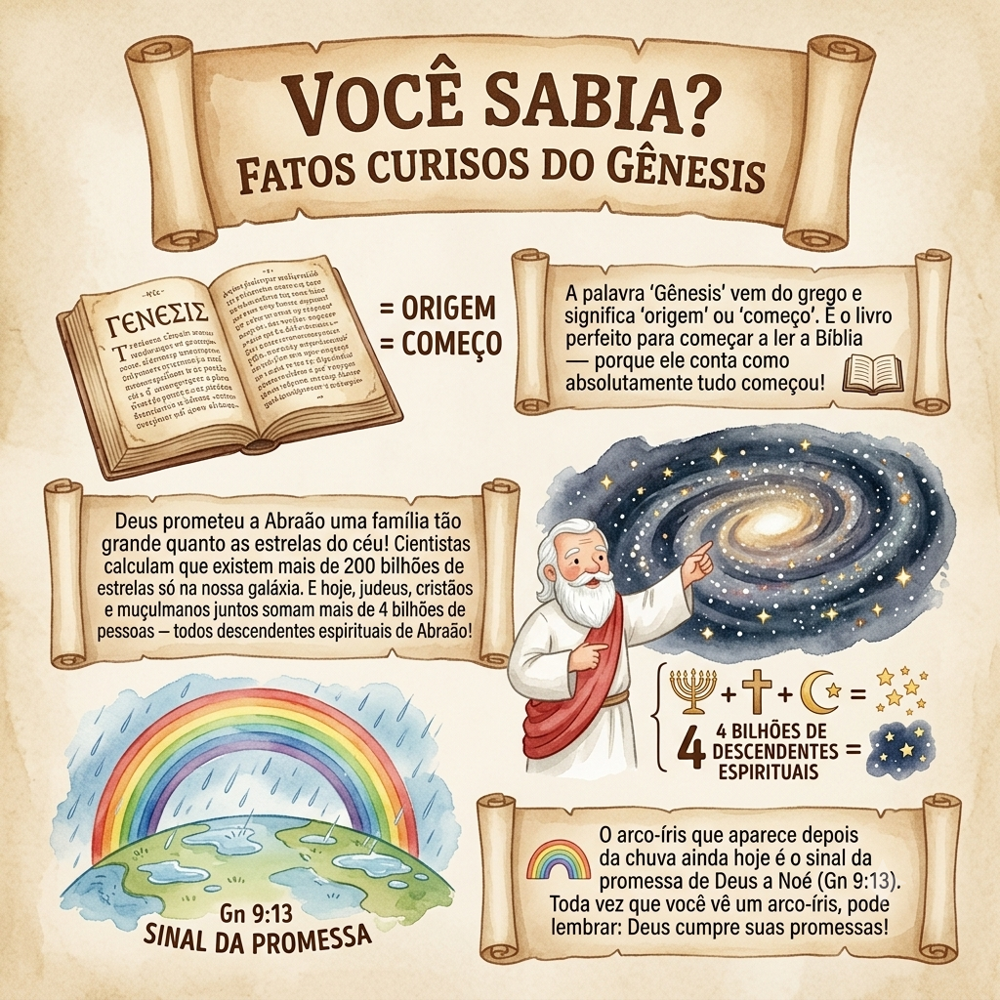

O Começo de Tudo — Um Resumo Visual para Crianças
No princípio Deus fez o céu e o mar,
As estrelas brilhantes para nos encantar,
Os animais, as plantas e você também,
Tudo foi feito com amor, muito além!
📖 Gênesis 1:1 — "No princípio, criou Deus os céus e a terra."
A Abraão Deus prometeu abençoar,
Uma família grande Ele ia formar,
Mesmo quando tudo parecia impossível,
Deus cumpriu Sua palavra, foi incrível!
📖 Gênesis 12:2 — "Farei de ti uma grande nação... e serás uma bênção."
Mesmo quando as pessoas erraram feio,
Deus sempre teve um plano, um anseio,
De salvar, perdoar e recomeçar,
Seu amor por nós nunca vai acabar!
📖 Gênesis 50:20 — "Vós intentastes o mal contra mim; porém Deus o tornou em bem."
"No princípio, criou Deus os céus e a terra."
— Gênesis 1:1
🌍 O que isso significa? Antes de tudo existir — antes das estrelas, dos animais, dos mares e de você — já existia Deus. Ele não surgiu de nada: Ele é eterno! E foi Ele quem decidiu criar tudo com amor. Você não é um acidente: foi feito de propósito por um Deus que quis que você existisse!

O personagem mais importante do livro — e de toda a Bíblia! Ele cria, promete, protege e nunca desiste das pessoas que ama. Cada história de Gênesis mostra um aspecto diferente de quem Ele é.
📖 Gn 1:27 — "Criou Deus o homem à sua imagem... homem e mulher os criou."
Quando todo o mundo tinha se afastado de Deus, Noé ficou firme. Ele construiu a arca, salvou sua família e recebeu a promessa do arco-íris — sinal de que Deus nunca mais destruiria a terra com o dilúvio!
📖 Gn 6:9 — "Noé era homem justo e íntegro entre os seus contemporâneos."
Deus chamou Abraão para deixar tudo para trás e ir para uma terra desconhecida. Ele foi! Deus prometeu que sua família seria tão grande quanto as estrelas do céu — e cumpriu!
📖 Gn 12:1 — "Disse o Senhor a Abrão: Sai da tua terra, da tua parentela e vai para a terra que te mostrarei."
Vendido como escravo pelos próprios irmãos, preso injustamente — e mesmo assim, Deus estava com ele! José subiu de escravo a governador do Egito e salvou toda a sua família da fome.
📖 Gn 39:2 — "O Senhor estava com José, e ele foi próspero."
Deus criou a luz, o céu, a terra, os mares, as plantas, o sol, a lua, os animais e, por último, o ser humano — feito à Sua imagem! No sétimo dia, Ele descansou e abençoou esse dia.
📖 Gn 1:31 — "Viu Deus tudo quanto fizera, e era muito bom."
Adão e Eva desobedeceram a Deus no jardim do Éden. O pecado entrou no mundo — mas Deus já tinha um plano de redenção! Mesmo os expulsando do jardim, Ele fez roupas para protegê-los.
📖 Gn 3:15 — "Porei inimizade entre ti e a mulher... ele te ferirá a cabeça." (a primeira promessa do Salvador!)
O mundo se encheu de maldade. Deus mandou o dilúvio, mas salvou Noé e sua família na arca. Depois, prometeu com um arco-íris: nunca mais destruiria a terra assim — uma promessa de misericórdia!
📖 Gn 9:13 — "Ponho o meu arco nas nuvens, e ele servirá de sinal de aliança entre mim e a terra."
Os últimos 39 capítulos contam a história de quatro gerações — a família que Deus escolheu para abençoar o mundo inteiro. Cheio de fé, erros, arrependimentos e redenção!
📖 Gn 50:20 — "Vós intentastes o mal contra mim; porém Deus o tornou em bem."

Gênesis diz que Deus criou o ser humano à Sua própria imagem. Você não é um acidente da natureza — você foi pensado, planejado e criado por Deus com um propósito especial!
📖 Gn 1:27 — "Criou Deus o homem à sua imagem, à imagem de Deus o criou."
Abraão esperou 25 anos por um filho — e Deus cumpriu! O arco-íris ainda aparece no céu hoje. Cada promessa de Gênesis nos lembra: podemos confiar em Deus também em nossas vidas!
📖 Gn 21:1 — "Visitou o Senhor a Sara... e o Senhor fez a Sara como havia prometido."
José foi traído, vendido e preso — mas Deus estava com ele em todo momento! A história de José nos ensina que, mesmo quando as coisas parecem horríveis, Deus pode transformar tudo em bem.
📖 Gn 39:21 — "O Senhor estava com José e lhe demonstrou misericórdia."
Gênesis responde às perguntas mais profundas: De onde viemos? Por que existimos? Por que o mundo tem sofrimento? A resposta começa aqui — em um Deus bom que criou um mundo bom.
📖 Gn 1:1 — "No princípio, criou Deus os céus e a terra."
Mesmo no capítulo 3, quando tudo parecia perdido, Deus já anunciou que um descendente da mulher esmagaria a cabeça da serpente. Desde o início, Deus planejou enviar Jesus!
📖 Gn 3:15 — "Ele te ferirá a cabeça." (a primeira profecia sobre Jesus na Bíblia!)
Gênesis apresenta o povo de Israel — descentes de Abraão — como o canal pelo qual Deus abençoaria o mundo inteiro. É o capítulo 1 da maior história já contada!
📖 Gn 12:3 — "Em ti serão benditas todas as famílias da terra."


A palavra "Gênesis" vem do grego e significa "origem" ou "começo". É o livro perfeito para começar a ler a Bíblia — porque ele conta como absolutamente tudo começou!
Deus prometeu a Abraão uma família tão grande quanto as estrelas do céu! Cientistas calculam que existem mais de 200 bilhões de estrelas só na nossa galáxia. E hoje, judeus, cristãos e muçulmanos juntos somam mais de 4 bilhões de pessoas — todos descendentes espirituais de Abraão!
O arco-íris que aparece depois da chuva ainda hoje é o sinal da promessa de Deus a Noé (Gn 9:13). Toda vez que você vê um arco-íris, pode lembrar: Deus cumpre suas promessas!
Gênesis diz que você foi criado à imagem de Deus (Gn 1:27). O que isso significa para você? Como muda a forma que você se vê — e vê as outras pessoas — saber que todos são criados por Deus?
Abraão esperou 25 anos por uma promessa de Deus. Você já teve que esperar por algo muito difícil? Como a história de Abraão pode te ajudar a continuar confiando mesmo quando demora?
José disse "Deus tornou em bem o que vocês planejaram para o mal" (Gn 50:20). Você já viveu uma situação ruim que depois se tornou algo bom? Como Deus pode fazer isso na nossa vida?
Escreva Gênesis 1:1 num papel e guarde na carteira ou cole no quarto. Toda vez que olhar para o céu ou a natureza esta semana, lembre: tudo isso foi feito por um Deus que te ama!
Desenhe um arco-íris e escreva uma promessa que Deus já cumpriu na sua vida. Depois, escreva uma coisa que você está esperando Ele fazer. Cole onde você vai ver todo dia!
Esta semana, quando alguém te machucar ou te tratar injustamente, em vez de se vingar, pergunte: "Como Deus pode transformar isso em algo bom?" — e escolha o perdão, como José escolheu!
© 2025 - Trilho Kids
Desenvolvido com ❤️ para crianças